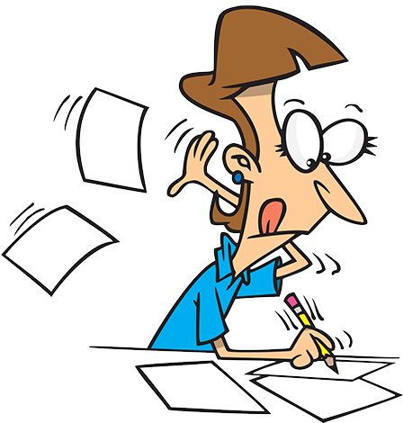

English Expository Essay Reading and Writing

What is Expository Essay? [click]
An expository essay is a genre of academic writing that focuses on explaining, illustrating, or clarifying a specific topic to the reader. It is designed to take a complex subject and break it down into a clear, logical, and easy-to-understand format using facts, statistics, and real-world examples. To achieve this clarity, a successful expository essay relies heavily on structure rather than creative flair. It requires the writer to investigate an idea, evaluate the evidence, and present a balanced exposition of the topic. Whether you are explaining how a technological tool works, analyzing a historical event, or discussing the health benefits of a simple habit, your job as the writer is to act as an informative guide—transforming confusion into complete understanding for your audience.
The Four Key Elements
Thesis Statement
The thesis statement acts as the absolute North Star and foundational anchor of your essay. It is a single sentence that states your central argument, and every subsequent paragraph exists solely to support it.
Coherence
Coherence represents the big-picture blueprint and structural logic of your entire piece. It ensures that your paragraphs are arranged in a meaningful order so that your ideas flow seamlessly from one major point to the next.
Cohesion
Cohesive devices function as the micro-level glue that binds individual sentences together. By using strategic transition words and pronouns, they prevent your writing from sounding choppy and make the reading experience feel effortless.
Takeaway
The takeaway is the ultimate parting gift you give to your audience in the conclusion. Instead of simply repeating your thesis, it answers the critical question of "So what?" and leaves the reader with a profound idea worth remembering.